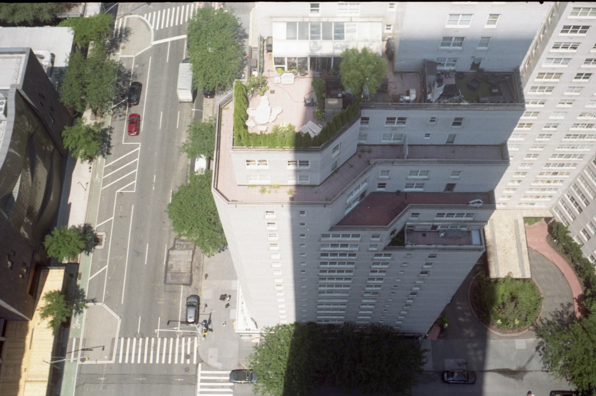

[about]

hey there! i am a third-year anthropology and journalism major at Northwestern University, passionate about combining anthropological research and journalism to create ethical federal and international policy. please feel free to check out my linkedin or ask for my resume!